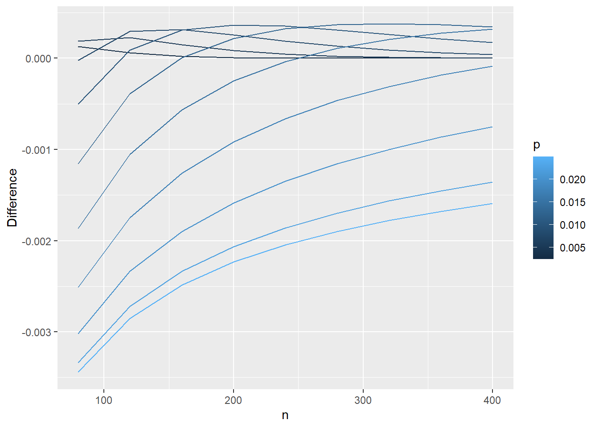

This page is part of the University of Colorado-Anschutz Medical Campus’ BIOS 6618 Recitation collection. To view other questions, you can view the BIOS 6618 Recitation collection page or use the search bar to look for keywords.
HW Question: Exact Binomial Probability versus Poisson Approximations
Your classmate is backpacking in Patagonia. While there, she discovers that 2.5% of the people she meets in the region are affected by pulmonary sarcoidosis. Wondering whether this sample prevalence is unusually high, she begins calculating the probability of her sample prevalence using a binomial distribution. However, this quickly becomes too computationally intensive. She wonders whether she could use the Poisson approximation instead to reduce the computational burden. Needing help, she writes you for advice.
Calculate the probability that 2.5% of Patagonians have the disease, assuming a sample size of 120 and population prevalence of 1%. Use both the exact binomial probability and the Poisson approximation of it. Compare the two.
Solution:
In this case we have a few pieces of information we need to assign roles to:
Sample size of 120
Population prevalence of 1%
Want to calculate the probability that the sample prevalence of 2.5% is unusually high
This problem asks us to calculate both the exact binomial probability, as well as the Poisson approximation of it. For the binomial distribution we know it has a probability mass function (PMF) with the form
From this problem, we know that \(n=120\) and we are assuming \(p=0.01\). Based on the information in our prompt, we know that the \(x\) of interest should correspond to a 2.5% sample prevalence out of 120 observations: \(x=0.025 \times 120 = 3\).
Given the sample size of 120, we can also note that it is impossible to observe exactly a 1% sample prevalence since it would correspond to \(0.01 \times 120 = 1.2\) (which does not fall in the sample space of \(x\)). Calculating this in the PMF directly results in:
For our Poisson approximation, we are told that “when the sample size is large and the probability is small” we can use the Poisson distribution to approximate the binomial distribution, where \(\lambda = np\). Recall, the Poisson PMF is
Notice that the sample space for \(x\) goes off to \(\infty\) and doesn’t stop at \(n\) like the binomial. In our case, we can calculate the approximate probability for our given problem with \(\lambda= np =120 \times 0.01 = 1.2\) as
The difference between the two approaches is pretty small with \(0.08665163 - 0.08674393 \approx -0.0000923\). And while calculating these quantities “by hand” may be a little more appealing with the Poisson approximation, we now have plenty of computational power to directly calculate the exact binomial probability.
Plotting Estimated Probabilities: base R vs. ggplot2
Allow your sample size to vary between 80 and 400 (by an increment of 40), while the population prevalence varies between 0.25% and 2.5% (by an increment of 0.25%). The prevalence in your sample is still 2.5%. Calculate the difference between the exact binomial probability and the Poisson approximation of the binomial, under all combinations of parameters. Plot the results.
Solution:
Let’s start off with an example using the graphics in base R, then see how we can do the same using ggplot2. First, we will need to use the hint from the HW and the work from lab on Tuesday to calculate the differences:
Code
# Set upn=seq(80,400,by=40) # varying sample sizep=seq(0.0025,.025,by=.0025) # varying probabilitynp<-expand.grid(n=n,p=p) # find every combinationnp$k<-.025*np$n # find the number in your sample with sarcoidosis np$lambda <- np$n*np$p # find lambda using the approximation equation# Calculate the probabilitiesnp$prob_bin <-dbinom(x=np$k, size=np$n, prob=np$p)np$prob_pois <-dpois(x=np$k, lambda=np$lambda)np$diff <- np$prob_pois-np$prob_bin
Plot Using Base R Graphics
One way to display this complex set of varying factors is to consider creating a plot that leverages different line types/colors/etc. to differentiate one variable of interest (e.g., the population prevalence \(p\)) while plotting the other variable along the x-axis (e.g., the sample size \(n\)) with the outcome on the y-axis (i.e., np$diff).
To do this with Base R’s graphics will take a little work, but we’ll walk through the steps and functions one-by-one in our commented code and leverage a loop to add lines to the plot with different colors:
Code
# Step 1: Create vector for colors to use in plotting our linescol_vec <-rainbow( length(p) ) # use "rainbow" so that each "p" has unique color spanning the rainbowcol_vec # check out what it returns
# Step 2: Create a blank plot to loop through each p to add the lines to:plot(x=NA, y=NA, xlab='n', ylab='Difference', xlim=c(80,400), ylim=c(-0.004,0.0005))# Step 3: Loop through and add lines for each pfor( i in1:length(p) ){ np_i <- np[which(np$p == p[i]),] # subset the data to plotlines(x=np_i$n, y=np_i$diff, col=col_vec[i]) }# Step 4: Add legend so we know what each line color/type islegend('bottomright', lty=1, col=col_vec, legend=p, cex=0.7, bty='n') # use cex=0.7 to shrink the size to avoid overlapping the lines, bty='n' removes the default box outline from the legend
Plot Using ggplot2
We can complete the same plot in essentially two lines of code with ggplot. If we coerce the np$p value to be a factor instead of numeric, ggplot will automatically provide a range of colors:
Code
library(ggplot2)# Coerce "p" to be a factor for different plotting colorsnp$p_factor <-factor(np$p)ggplot(data=np, aes(x=n,y=diff,group=p_factor,color=p_factor)) +# using group=p tells ggplot to essentially do the for loop we had to use above for the base R graphicsgeom_line() +# specifies that we want a line graphylab('Difference')
Note that if we didn’t coerce np$p to be a factor, we’d just have gradients of the same color (which kind of gets the point across but is a bit harder to tell apart):
Code
# Plot with the numeric version of our prevalenceggplot(data=np, aes(x=n,y=diff,group=p,color=p)) +# using group=p tells ggplot to essentially do the for loop we had to use above for the base R graphicsgeom_line() +# specifies that we want a line graphylab('Difference')

Recommended Sample Size for Poisson Approximation to the Binomial Distribution
At what sample size and prevalence would you recommend that your friend use the Poisson approximation to the binomial? How does this compare to the general recommendation given by Rosner?
Solution:
The answer is somewhat subjective. But we can reference the hint and try to identify what may be large enough for \(n\) and small enough for \(p\) (our population prevalence) to achieve a decent approximation.
Why Use the Poisson Approximation?
Admittedly, most computers these days can handle the direct calculation of a binomial probability without much issue, even for larger sample sizes. Its real use came when computers had less computational ability and the Poisson could more easily be calculated.
For much work, we can likely use the exact binomial probability without any approximation. Some other cases where it may be useful to consider a Poisson approximation:
You are asked to do something by hand or without access to statistical software and the binomial PMF is a bit nastier to work with
The Poisson distribution only relies on one parameter, \(\lambda\), whereas the binomial has two parameters to consider (\(n,p\))
If you suspect \(n\) is large but are uncertain about the exact number of scenarios, we can show that the Poisson is a limiting case of the binomial distribution
There are some theoretical properties of Poisson random variables that do not hold for binomial random variables (e.g., if \(X \sim Poi(\lambda_X)\) and \(Y \sim Poi(\lambda_Y)\), then \(X+Y \sim Poi(\lambda_X + \lambda_Y)\); but for Binomial it only holds if we assume the same probability: if \(A \sim Bin(n,p)\) and \(B \sim Bin(m,p)\), then \(A+B \sim Bin(n+m,p)\), if \(p\) is different for \(A\) and \(B\) the estimates are non-trivial see this paper on “Approximating the Sum of Independent Non-Identical Binomial Random Variables” )
The Poisson distribution relates to Poisson (point) processes (e.g., where we know the average time between any two events, but the exact timing of any observed event is random; e.g., modeling the number of car accidents at a certain intersection in a month if we know from past data that 0.3 occur in an average month)
Source Code
---title: "Poisson Approximations to Exact Binomial Probabilities"author: name: Alex Kaizer roles: "Instructor" affiliation: University of Colorado-Anschutz Medical Campustoc: truetoc_float: truetoc-location: leftformat: html: code-fold: show code-overflow: wrap code-tools: true---```{r, echo=F, message=F, warning=F}library(kableExtra)library(dplyr)```This page is part of the University of Colorado-Anschutz Medical Campus' [BIOS 6618 Recitation](/recitation/index.qmd) collection. To view other questions, you can view the [BIOS 6618 Recitation](/recitation/index.qmd) collection page or use the search bar to look for keywords.# HW Question: Exact Binomial Probability versus Poisson ApproximationsYour classmate is backpacking in Patagonia. While there, she discovers that 2.5% of the people she meets in the region are affected by pulmonary sarcoidosis. Wondering whether this sample prevalence is unusually high, she begins calculating the probability of her sample prevalence using a binomial distribution. However, this quickly becomes too computationally intensive. She wonders whether she could use the Poisson approximation instead to reduce the computational burden. Needing help, she writes you for advice. Calculate the probability that 2.5% of Patagonians have the disease, assuming a sample size of 120 and population prevalence of 1%. Use both the exact binomial probability and the Poisson approximation of it. Compare the two. **Solution:** In this case we have a few pieces of information we need to assign roles to:* Sample size of 120* Population prevalence of 1%* Want to calculate the probability that *the sample prevalence* of 2.5% is unusually highThis problem asks us to calculate both the exact binomial probability, as well as the Poisson approximation of it. For the binomial distribution we know it has a probability mass function (PMF) with the form$$ P(X=x) = \binom{n}{x} p^{x} (1-p)^{n-x}, \; x=0,1,...,n $$From this problem, we know that $n=120$ and we are assuming $p=0.01$. Based on the information in our prompt, we know that the $x$ of interest should correspond to a 2.5% sample prevalence out of 120 observations: $x=0.025 \times 120 = 3$. Given the sample size of 120, we can also note that it is impossible to observe *exactly* a 1% sample prevalence since it would correspond to $0.01 \times 120 = 1.2$ (which does not fall in the *sample space* of $x$). Calculating this in the PMF directly results in:$$ P(X=3) = \binom{120}{3} (0.01)^{3} (1-0.01)^{120-3} = \frac{120!}{3!(120-3)!} (0.01)^{3} (1-0.01)^{120-3} = 0.08665163 $$For our Poisson approximation, we are told that "when the sample size is large and the probability is small" we can use the Poisson distribution to approximate the binomial distribution, where $\lambda = np$. Recall, the Poisson PMF is$$ P(X=x) = \frac{e^{-\lambda} \lambda^x}{x!}, \; x=0,1,2,... $$Notice that the sample space for $x$ goes off to $\infty$ and doesn't stop at $n$ like the binomial. In our case, we can calculate the approximate probability for our given problem with $\lambda= np =120 \times 0.01 = 1.2$ as$$ P(X=3) = \frac{e^{-1.2} (1.2)^{3}}{3!} = 0.08674393 $$The difference between the two approaches is pretty small with $0.08665163 - 0.08674393 \approx -0.0000923$. And while calculating these quantities "by hand" may be a little more appealing with the Poisson approximation, we now have plenty of computational power to directly calculate the exact binomial probability. # Plotting Estimated Probabilities: base R vs. ggplot2Allow your sample size to vary between 80 and 400 (by an increment of 40), while the population prevalence varies between 0.25% and 2.5% (by an increment of 0.25%). The prevalence in your sample is still 2.5%. Calculate the difference between the exact binomial probability and the Poisson approximation of the binomial, under all combinations of parameters. Plot the results.**Solution:** Let's start off with an example using the graphics in base R, then see how we can do the same using `ggplot2`. First, we will need to use the hint from the HW and the work from lab on Tuesday to calculate the differences:```{r,warning=FALSE}# Set upn=seq(80,400,by=40) # varying sample sizep=seq(0.0025,.025,by=.0025) # varying probabilitynp<-expand.grid(n=n,p=p) # find every combinationnp$k<-.025*np$n # find the number in your sample with sarcoidosis np$lambda <- np$n*np$p # find lambda using the approximation equation# Calculate the probabilitiesnp$prob_bin <-dbinom(x=np$k, size=np$n, prob=np$p)np$prob_pois <-dpois(x=np$k, lambda=np$lambda)np$diff <- np$prob_pois-np$prob_bin```## Plot Using Base R GraphicsOne way to display this complex set of varying factors is to consider creating a plot that leverages different line types/colors/etc. to differentiate one variable of interest (e.g., the population prevalence $p$) while plotting the other variable along the x-axis (e.g., the sample size $n$) with the outcome on the y-axis (i.e., `np$diff`).To do this with Base R's graphics will take a little work, but we'll walk through the steps and functions one-by-one in our commented code and leverage a loop to add lines to the plot with different colors:```{r}# Step 1: Create vector for colors to use in plotting our linescol_vec <-rainbow( length(p) ) # use "rainbow" so that each "p" has unique color spanning the rainbowcol_vec # check out what it returns# Step 2: Create a blank plot to loop through each p to add the lines to:plot(x=NA, y=NA, xlab='n', ylab='Difference', xlim=c(80,400), ylim=c(-0.004,0.0005))# Step 3: Loop through and add lines for each pfor( i in1:length(p) ){ np_i <- np[which(np$p == p[i]),] # subset the data to plotlines(x=np_i$n, y=np_i$diff, col=col_vec[i]) }# Step 4: Add legend so we know what each line color/type islegend('bottomright', lty=1, col=col_vec, legend=p, cex=0.7, bty='n') # use cex=0.7 to shrink the size to avoid overlapping the lines, bty='n' removes the default box outline from the legend```## Plot Using `ggplot2`We can complete the same plot in essentially two lines of code with `ggplot`. If we coerce the `np$p` value to be a factor instead of numeric, `ggplot` will automatically provide a range of colors:```{r}library(ggplot2)# Coerce "p" to be a factor for different plotting colorsnp$p_factor <-factor(np$p)ggplot(data=np, aes(x=n,y=diff,group=p_factor,color=p_factor)) +# using group=p tells ggplot to essentially do the for loop we had to use above for the base R graphicsgeom_line() +# specifies that we want a line graphylab('Difference')```Note that if we didn't coerce `np$p` to be a factor, we'd just have gradients of the same color (which kind of gets the point across but is a bit harder to tell apart):```{r}# Plot with the numeric version of our prevalenceggplot(data=np, aes(x=n,y=diff,group=p,color=p)) +# using group=p tells ggplot to essentially do the for loop we had to use above for the base R graphicsgeom_line() +# specifies that we want a line graphylab('Difference')```# Recommended Sample Size for Poisson Approximation to the Binomial DistributionAt what sample size and prevalence would you recommend that your friend use the Poisson approximation to the binomial? How does this compare to the general recommendation given by Rosner?**Solution:**The answer is somewhat subjective. But we can reference the hint and try to identify what may be large enough for $n$ and small enough for $p$ (our population prevalence) to achieve a decent approximation.# Why Use the Poisson Approximation?Admittedly, most computers these days can handle the direct calculation of a binomial probability without much issue, even for larger sample sizes. Its real use came when computers had less computational ability and the Poisson could more easily be calculated.For much work, we can likely use the exact binomial probability without any approximation. Some other cases where it may be useful to consider a Poisson approximation:1. You are asked to do something by hand or without access to statistical software and the binomial PMF is a bit nastier to work with2. The Poisson distribution only relies on one parameter, $\lambda$, whereas the binomial has two parameters to consider ($n,p$)3. If you suspect $n$ is large but are uncertain about the exact number of scenarios, we can show that the Poisson is a *limiting case* of the binomial distribution 4. There are some theoretical properties of Poisson random variables that do not hold for binomial random variables (e.g., if $X \sim Poi(\lambda_X)$ and $Y \sim Poi(\lambda_Y)$, then $X+Y \sim Poi(\lambda_X + \lambda_Y)$; but for Binomial it only holds if we assume the same probability: if $A \sim Bin(n,p)$ and $B \sim Bin(m,p)$, then $A+B \sim Bin(n+m,p)$, if $p$ is different for $A$ and $B$ the estimates are non-trivial [see this paper on "Approximating the Sum of Independent Non-Identical Binomial Random Variables"](https://journal.r-project.org/archive/2018/RJ-2018-011/RJ-2018-011.pdf) )5. The Poisson distribution relates to Poisson (point) processes (e.g., where we know the average time between any two events, but the exact timing of any observed event is random; e.g., modeling the number of car accidents at a certain intersection in a month if we know from past data that 0.3 occur in an average month)